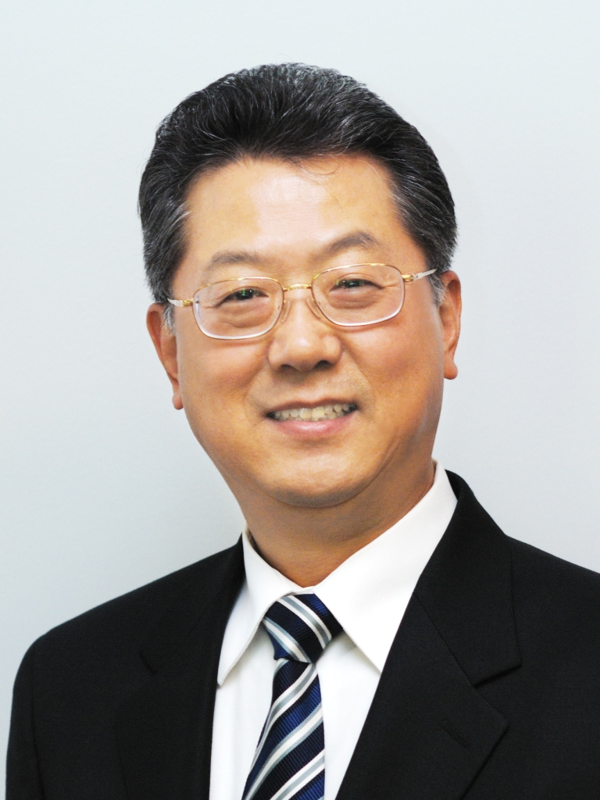

Professor

Dr. Chong H. Ahn
Distinguished University Research Professor
M.P. Kartalia Chair Professor of BioMEMS
ahnch@ucmail.uc.edu
Rhodes Hall #900 | (513) 556-4767
PhD & MS Students


Ahn's Lab Alumni
(Ph.D.)
- Vinitha Thiyagarajan Upaassana, Ph.D. (2022), Founder & Director, Perceive Now, CA, USA
- Sthitodhi Ghosh, Ph.D. (2020), Research Scientist, Intel Inc., Portland, USA
- Zhizhen Wu, Ph.D. (2017), Research Scientist, Electrical Engineering, University of Virginia, VA USA
- Kang Kug Lee, Ph.D. (2013), Professor, Wilberforce University, OH, USA
- Wooseok Jung, Ph.D. (2013), Research Scientist, Roche Inc., CA, USA
- Pei-Ming Wu, Ph.D. (2010), Research Scientist, Feinstein Institute for Medical Research, NY, USA
- Andrew Browne, Ph.D. (2010), M.D., Clinical Assistant Professor, Gavin Herbert Eye Institute, University of California Irvine, CA, USA
- Joon Sub Shim, Ph.D. (2010), Professor, Electronics Convergence Engineering, Kwangwoon University, Seoul, South Korea
- Matthew Estes, Ph.D. (2009), Director, Systems Integration Division, Inscriptia Inc., CA, USA
- Michael Rust, Ph.D. (2009), Professor, New England University, MA, USA
- Zhiwei Zou, Ph.D. (2009), Lawyer and Partner, Bayes PLLC, Philladelphia, PA, USA
- Se Hwan Lee, Ph.D. (2008), Reserach Scientist, Corning Inc., CA, USA
- SooHyun Lee, Ph.D. (2007), Director, BioMEMS Lab, Korea Institute of Science and Technology (KIST), Seoul, South Korea
- Chunyan Li, Ph.D. (2007), Associate Professor, Institute of Bioelectronic Medicine, Feinstein Institutes for Medical Research, NY, USA
- Rong Rong, Ph.D. (2007), Sr. Manager, Process Development, Headway Technologies (TDK), CA, USA
- Jaephil Do, Ph.D. (2006), VP of Engineering, Tomocube Inc., Seoul, South Korea
- Jungyoup Han, Ph.D. (2006), Chief Strategy Officer (CSO), Target Health LLC, New Jersey, USA
- Junhai Kai, Ph.D. (2006), Research Scientist, Medpace, OH, USA
- Clayton Sippola, Ph.D. (2006), Technical Director, Leonardo DRS, USA
- Xiaoshan Zhu, Ph.D. (2005), Professor, Electrical and Biomedical Engineering, University of Nevada, Reno, USA
- Chuan Gao, Ph.D. (2005), Research Scientist, Affymetrix, CA, USA
- Chien-Chong (Red) Hong, Ph.D. (2004), Professor, Department of Power Mechanical Engineering, National Tsing-Hua University, Taiwan (R.O.C.).
- Aniruddha Puntambekar, Ph.D. (2004), Sr. Acceleration Manager, Medical Devices & Diagnostics, Cincinnati Children's Hospital (CCHMC), USA
- Hyoung Jin Cho, Ph.D. (2002),Professor, Mechanical Engineering and Material Science, University of Central Florida, FL, USA
- Kwang Wook Oh, Ph.D. (2001), Professor, Electrical and Computer Engineering, University of Buffalo (SUNY Buffalo), NY, USA
- Daniel J. Sadler, Ph.D. (2001), Technical Director, Freescale Semiconductor Inc., Phoenix, AZ, USA
- Jin-Woo Choi, Ph.D. (2000), Professor and Head, Electrical Engineering, Michigan Tech University, MI, USA
- Trifon M. Liakopoulos, Ph.D. (2000), President & CEO, EnaChip Inc., USA
(Post Doc.)
- Dr. Jun Yan, (2001-2003), Engineering Director, Coventor, MA
- Dr. Young-Soo Sohn, (2000-2002), Professor, Dae-Gu Catholic University, South Korea
- Dr. SangHyo Kim, (1999-2001), Professor, Gacheon University, South Korea
- Dr. San-Mae Lee, (1999), Professor, Pusan National University, South Korea
- Dr. Shekhar Bhansali, Professor, Florida International University, USA
(M.S.)
- Nirjhar Bhattacharya, MS (2015), Ph.D. Research Scientist, Intel, USA
- Yongkun Sui, MS (2014), Research Associate, Sandia National Laboratory, Albuquerque, NM, USA
- Bharat Ram Ramaswamy, MS (2012), Product Developer, Amazon Sagemaker, Amazon Web Services
- Eric MacKnight, M.S. (2008)
- Nathaniel Hadlock, M.S. (2006), Director and Co-founder, Pela Terra Inc., USA
- Ashwin Kumar Samarao, M.S. (2006), Professor, Electrical & Computer Engineering, Texas A&M University, USA
- Phalgun Myneni, M.S. (2004), Director, Business Relationship, McCormick & Company, Twoson, Marlyand USA
- Alok Jain, M.S. (2004). Head of Etch Product Management, Lam Research India, Bengaluru, Karnataka, India
- Shilpa Thati, M.S. (2004).
- Robert L. Cole, M.S. (2004), Research Engineer, Wright Patterson Research Center, OH, USA
- Sreeram Appasamy, M.S. (2003), Micron Technology, India (Strategic Pricing and Deal Support)
- Ramachandran Trichur, M.S. (2003), Global Head, Semiconductor Packaging, Henkel, Irvin, CA, USA
- Shomir Banerjee, M.S. (2002), MD Physician, Monterey Concierge Medicine, Monterey, CA, USA
- Sukirti Gupta, M.S. (2002), Research Associate, Cloud Business Unit, AMD, Sunnyvale, CA, USA
- Arum Han, M.S. (2000), PhD., Professor, Electrical and Computer Engineering, Texas A&M University, TX, USA
- Srinivasan Iyengar, M.S. (1999), Principal Engineer, Intel, San Jose, CA, USA
- Jeff Cropp, M.S. (1999), Principal Engineer, Teh Cadmus Group, Inc., Portland, Oregon, USA
- Kurt Kramer, M.S. (1998) Senior Manager, Thermo Fisher Scientific, Pinole, CA, USA
- Ming Xu, M.S. (1998).
- Wnzin Zhang, M.S. (1997).
Visiting Scholars and Professors
- Dr. Yun-Jung Lee,(2008), Ph.D., Research Fellow, Cincinnati Children's Hospital Medical Center
- Dr. Kyeongryong Lee,(2008), MD & Ph.D., Professor, Konkuk University, South Korea
- Dr. Jong Cook Park,(2007-2008), MD & PH.D., Cheju National University, South Korea
- Dr. Jong Huyn Lee, (2005), Ph.D., Professor, GIST, South Korea
- Dr. Suk Won Min, (2004), Ph.D., Professor, Soonchunhyang University, South Korea
- Susumu Arai, (2004), Research Associate, Sumitomo Bakelite co. Ltd., Japan
- Dr. Tai Hun Kwon, (2003), Ph.D., Professor, POSTECH, South Korea
- Dr. Dong Sung Kim, (2003), Ph.D., Professor, POSTECH, South Korea
- Dr. Jongman Park, (2002), Ph.D., Professor, Konkuk University, South Korea
- Shigeyoshi Horiike, (2001), Research Associate, Shimadzu InC., Japan
- Dr. Sang Sik Yang, (2002), Ph.D., Professor, Ajou University, South Korea
- Dr. SangHyo Kim, (2002), Ph.D., Professor, Gachun University, South Korea
- Dr. Chin Woo Yi, (2001), Ph.D., Professor, Hoseo University, South Korea
- Dr. Jong Il Park, (2001), Ph.D., Professor, Korea Millitary Academy, South Korea
- Dr. Tae-Chul Nam, (2000), Ph.D., Professor, YeongNam Univ., South Korea